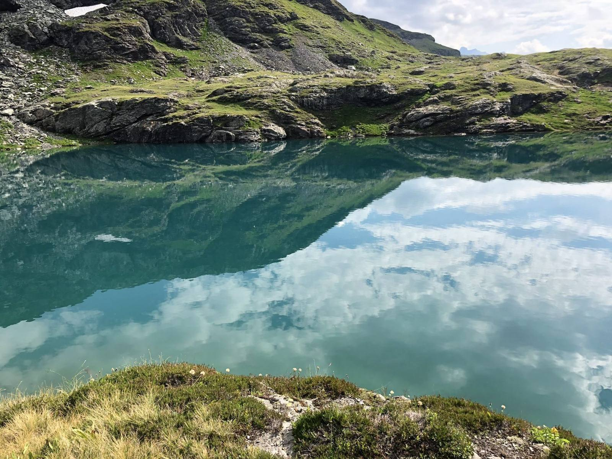

Eigenschaft
Ungeduld
Wenn Dinge langsam laufen, werde ich nervös.
Dein Vorteil: Ich nutze den Schwung. Bei mir bleibt nichts liegen.

Ein Mensch mit Ecken, Kanten und einer großen Leidenschaft für das „Machen“.
Ich bin 29 Jahre alt, komme aus Heidenheim und bin glücklich verheiratet.
Hauskauf und Kernsanierung 2024.
Wenn ich nicht gerade arbeite, brauche ich einen Ausgleich, der mich erdet.
Niemand ist perfekt. Aber ich weiß, wie ich meine Eigenschaften für dich nutze.
Eigenschaft
Wenn Dinge langsam laufen, werde ich nervös.
Dein Vorteil: Ich nutze den Schwung. Bei mir bleibt nichts liegen.
Eigenschaft
Mein „Radar“ ist immer an, ich nehme alles wahr.
Dein Vorteil: Im Gespräch ist das Gold wert. Ich erkenne unausgesprochene Bedürfnisse.
Eigenschaft
Ich verlasse mich nie nur auf mein Gedächtnis.
Dein Vorteil: Deshalb nutze ich wasserdichte Systeme. Was aufgeschrieben ist, wird erledigt.
Am schnellsten erreichst du mich am Telefon. Oder du schreibst mir über LinkedIn oder Instagram.
+49 151 40411184ODYN - Wald (2026 Remake)Pausiert